Acoustic & Folk Recording Technology
From the field recordings of Alan Lomax and 1960s Greenwich Village coffeehouses to British folk rock and 1970s Laurel Canyon singer-songwriters, acoustic folk is defined by capturing organic acoustic instruments, vocal nuance, and natural acoustic space with utmost fidelity.
Tradition to Revival
Trace acoustic folk from Woody Guthrie and Lead Belly, through Bob Dylan and Joan Baez, to Fairport Convention, Joni Mitchell, and Nick Drake.
Stereo Pairs & Condensers
Master 12th fret placement, small diaphragm condensers (AKG C451, KM184), ribbon microphones, and stereo arrays (XY coincident, Spaced Pair, Blumlein).
Optical Leveling & Bleed
Explore transparent dynamic control via the Teletronix LA-2A, EMT 140 plate reverb, acoustic spill management, and gentle high-shelf air equalization.
Component 3 Syllabus Matrix for Folk
Edexcel expects students to understand both acoustic capture techniques and the social and historical contexts of folk and folk rock.
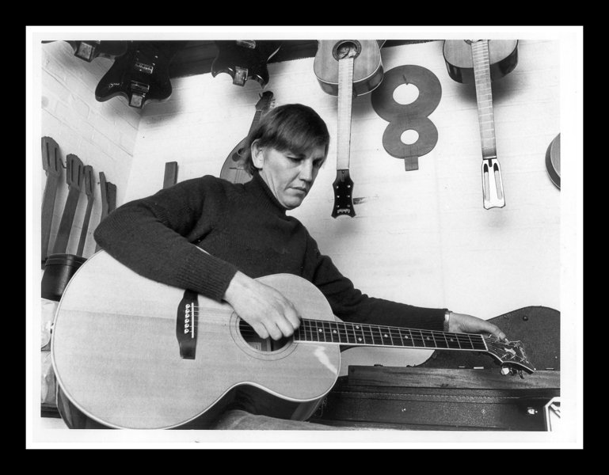
AO3 TransducersAcoustic Guitar Miking
Small vs large diaphragm condensers; 12th fret positioning for balance; sound hole proximity effect avoidance; Blumlein & XY stereo pairs.
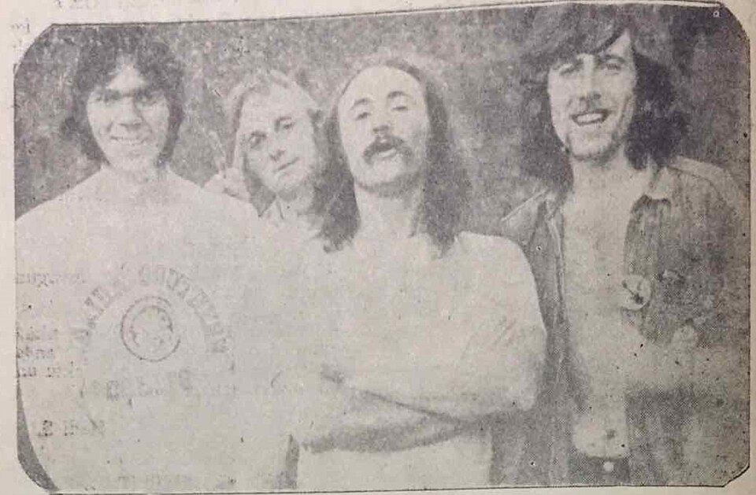
AO4 Acoustic to ElectricRevival & Folk Rock
Traditional ballads meeting rock amplification; Dylan going electric at Newport '65; Sound Techniques studio (Joe Boyd, John Wood).
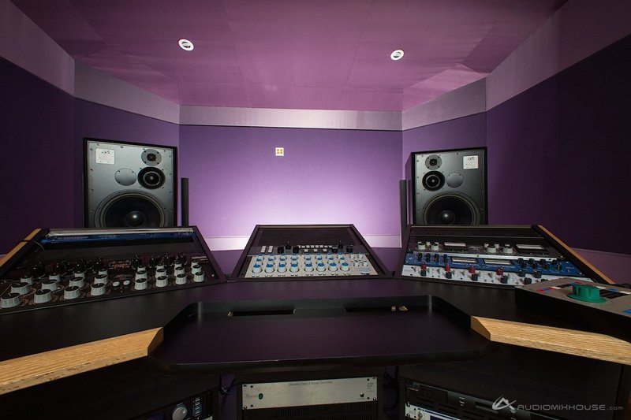
AO3 Studio ProcessingTransparent Mix Chains
Smooth optical leveling (LA-2A); embracing natural acoustic bleed; plate reverb (EMT 140) and stereo soundstage panning.
Field Capture & Traditional Song Collectors
Before modern recording studios existed, acoustic folk music survived through oral tradition and pioneering field recordists.
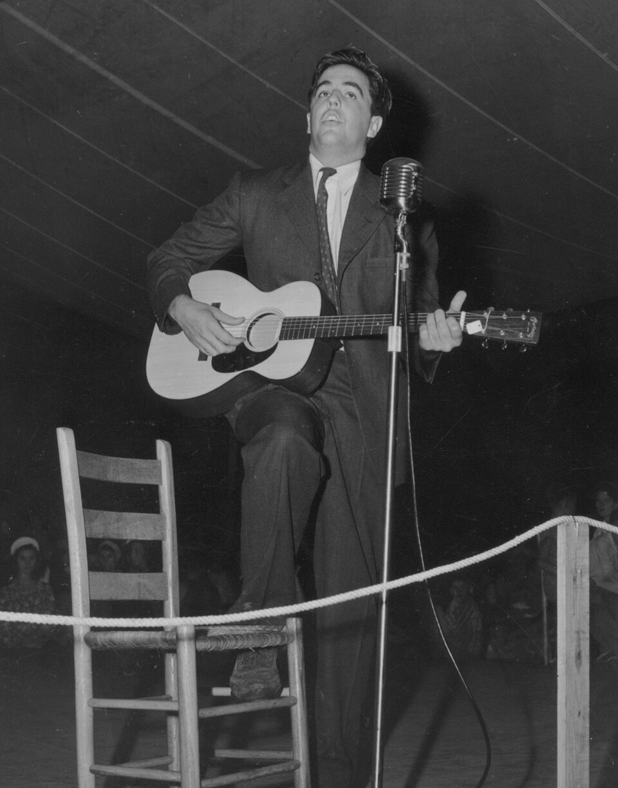
AO4 Historical ContextAlan Lomax Field Recordings
Lomax travelled the American South and British Isles with portable disc cutters and early tape machines, archiving work songs and ballads in natural settings.
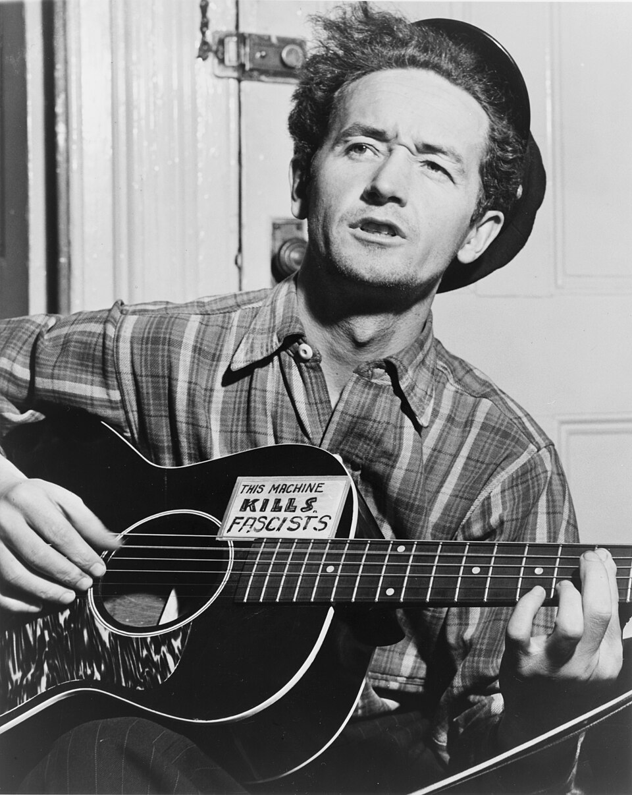
AO4 Political BalladsWoody Guthrie & Protest
Armed with a flat-top acoustic labelled "This Machine Kills Fascists", Guthrie established topical storytelling songs like This Land Is Your Land.
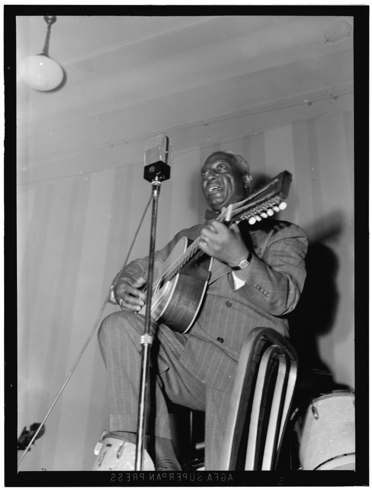
AO4 12-String PowerLead Belly & 12-String Drive
Huddie Ledbetter recorded iconic folk-blues on a Stella 12-string acoustic guitar, providing booming bass basslines and ringing acoustic chorus.
Greenwich Village Coffeehouses & Protest Songs
In early 1960s New York, young singer-songwriters gathered in intimate coffeehouses like The Gaslight Cafe, igniting a cultural explosion.
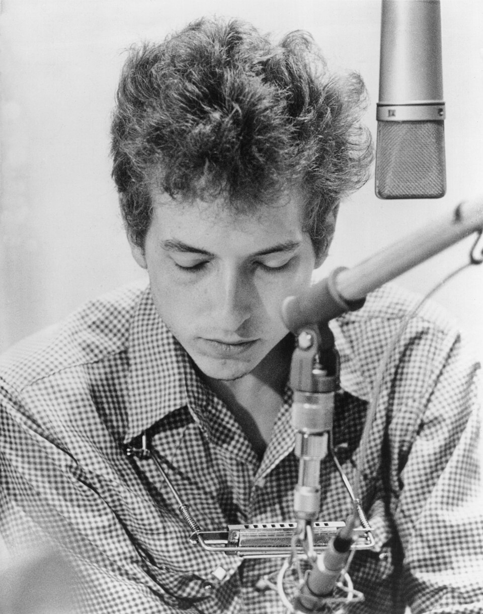
AO4 Landmark ArtistBob Dylan Acoustic Era
Solo acoustic guitar, harmonica rack, and poetic topical lyrics on The Freewheelin' Bob Dylan and The Times They Are A-Changin'.
Joan Baez & Balladry
Celebrated for her pure vibrato soprano and intricate fingerpicking on small-body Martin 0-45 acoustics, championing civil rights anthems.
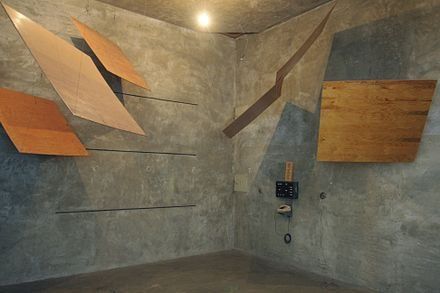
AO3 Studio CaptureCoffeehouse Sound in Studio
Columbia 30th Street Studio captured Dylan and Baez live with minimal processing: one condenser on voice, one on guitar, zero overdubs.
The Flat-Top Steel-String: Martin & Gibson
The flat-top acoustic steel-string guitar is the harmonic foundation of American and British folk music.
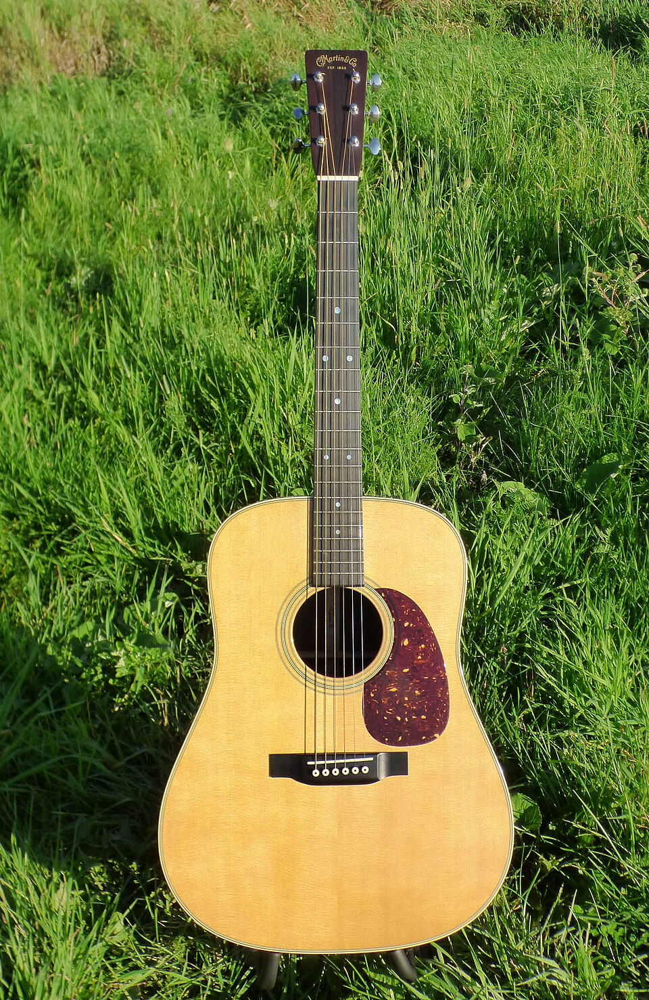
AO4 Flagship GuitarMartin D-28 Dreadnought
Introduced in 1931, the D-28 features a large resonant body, solid spruce top, and rosewood back/sides, delivering powerful acoustic projection and deep bass.
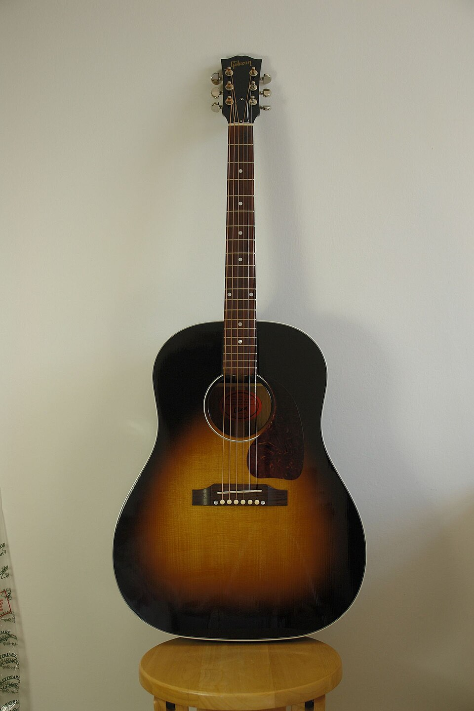
AO4 Slope-Shoulder ToneGibson J-45 "The Workhorse"
Featuring mahogany back and sides with a round-shoulder dreadnought shape, the J-45 offers a warm, woody midrange beloved by singer-songwriters.
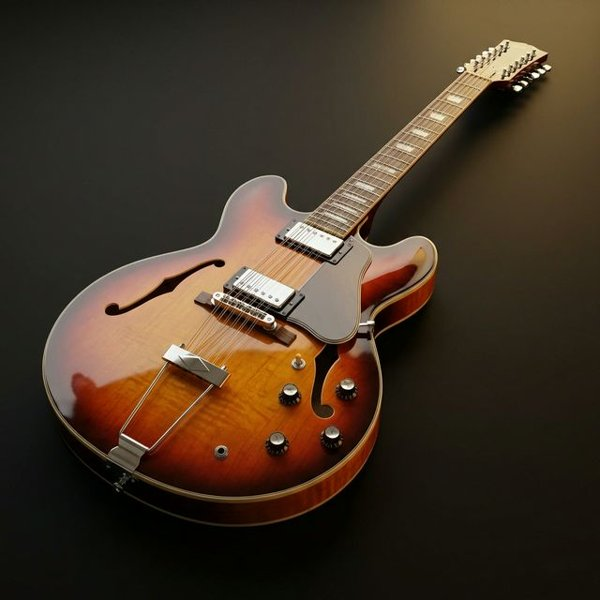
AO3 Acoustic Chorusing12-String Acoustic Guitars
Tuned in octaves on the lower four courses and unisons on the top two, the 12-string produces a natural shimmering chorus effect without studio modulation.
Traditional Strings: Banjo, Mandolin, Fiddle & Bass
Beyond the six-string guitar, folk ensembles rely on a rich palette of acoustic stringed instruments.
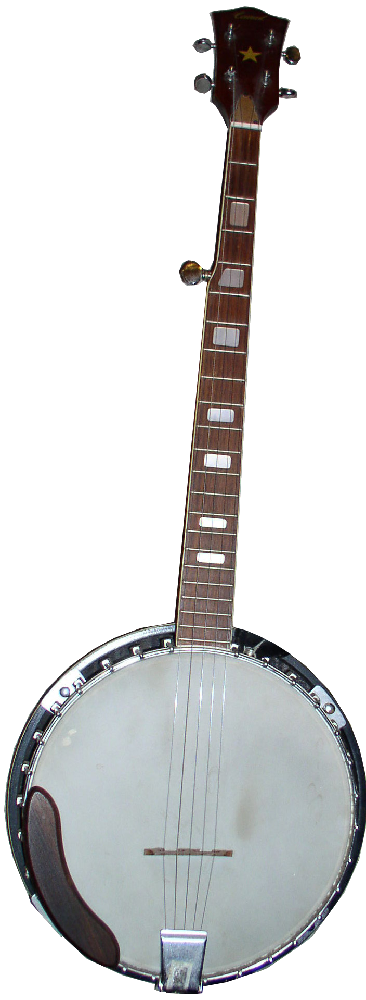
AO4 Percussive Attack5-String Banjo
Features a vibrating skin/plastic head and a high-pitched drone 5th string. Played with rapid clawhammer or three-finger Scruggs picking.
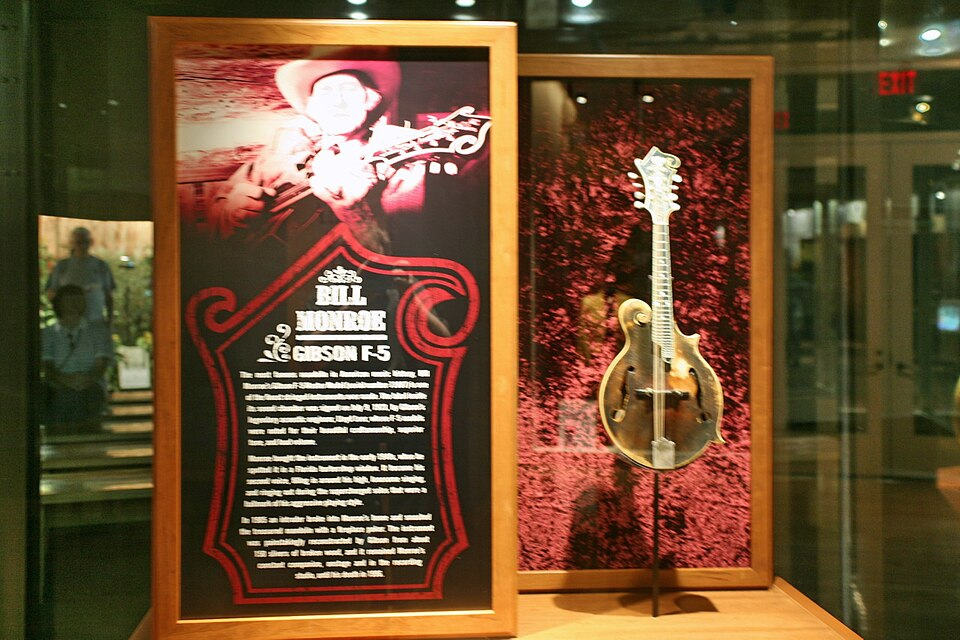
AO4 Rhythmic ChopAcoustic Mandolin
Eight strings tuned in pairs (G-D-A-E). Used for driving rhythmic "chop" chords that emulate an acoustic snare drum, plus fast melodic lead lines.
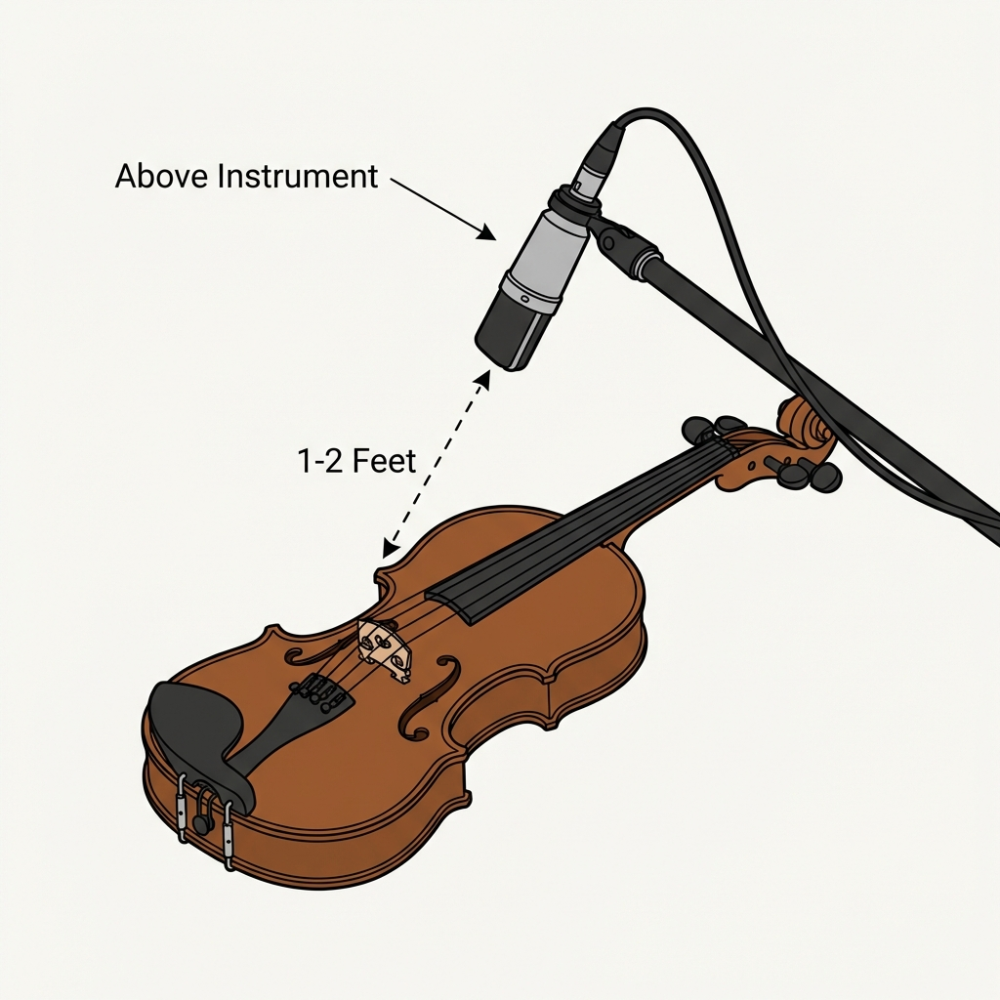
AO3 Bowed Strings & BassFiddle & Upright Double Bass
Fiddle provides modal ornamentation and Celtic reels; upright acoustic bass delivers warm fundamental low-end, miked near bridge and fingerboard.
Acoustic Guitar: 12th Fret vs Sound Hole
Positioning is critical: placing a microphone directly in front of the sound hole is one of the most common exam mistakes.
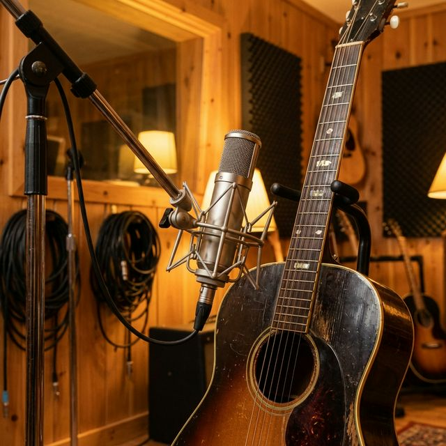
AO3 Exam StandardThe 12th Fret Sweet Spot
Aiming a directional condenser at the 12th–14th fret (6–12 inches away) yields the optimal balance of string attack, finger pick clarity, and natural body warmth.
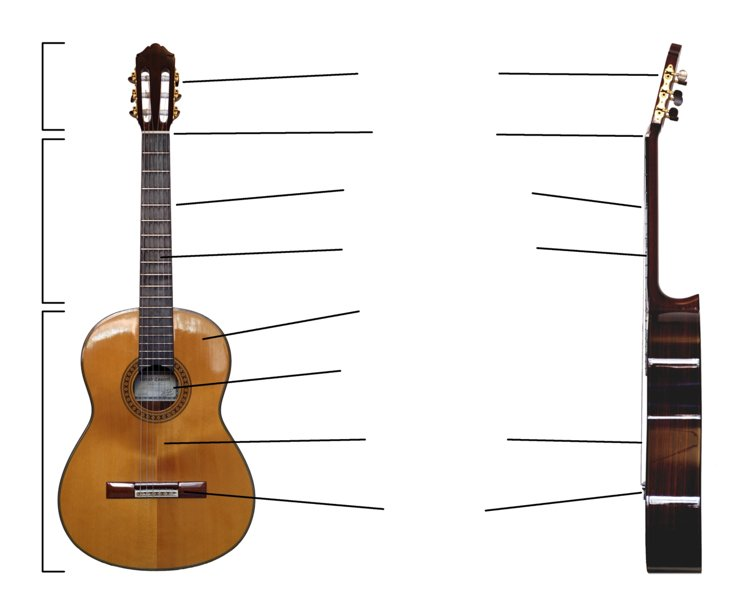
AO3 Lower Bout MikingBridge / Lower Bout Capture
A second microphone placed behind the bridge captures resonant woody warmth. Combining this with a 12th-fret mic creates a full stereo image.
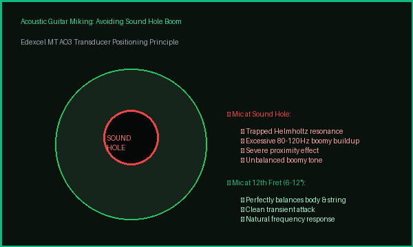
AO3 Common PitfallAvoid The Sound Hole!
Pointing directly into the sound hole causes severe proximity effect and resonant air cavity "booming" around 100–250 Hz that clouds the entire mix.
Condensers vs Ribbons: Capturing Acoustic Detail
Choosing the right transducer design determines how string transients, harmonic sparkle, and warmth are translated.
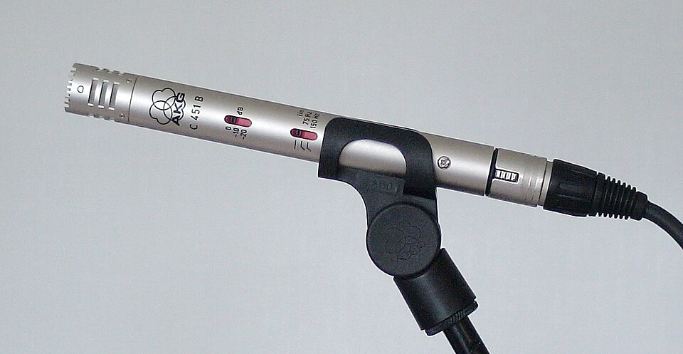
AO3 Transient SpeedSmall Diaphragm (SDC)
Pencil condensers (AKG C451, Neumann KM84/KM184) have ultralight diaphragms for blistering transient response and airy high-frequency extension.
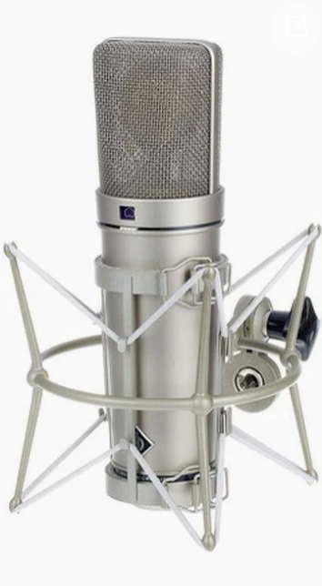
AO3 Full-Range DepthLarge Diaphragm (LDC)
Tube & FET condensers (Neumann U67, U87, AKG C12) provide rich low-end fullness and smooth upper mids, ideal for lead vocals and body capture.
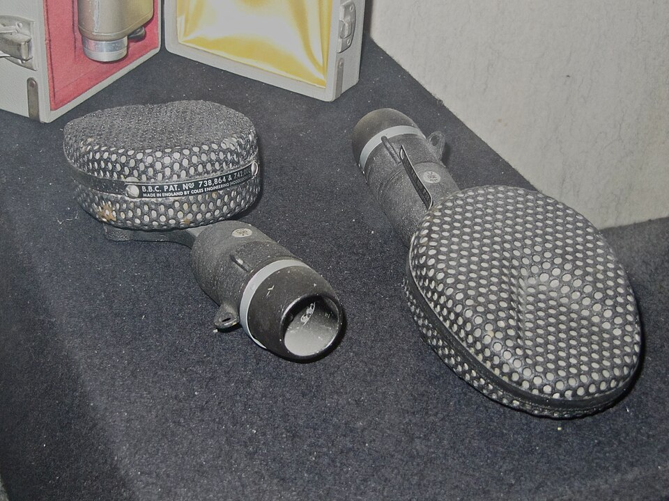
AO3 Smooth Top-EndRibbon Microphones (Coles 4038)
Velocity ribbon transducers offer a natural high-frequency roll-off, taming harsh finger squeaks and brittle banjo upper harmonics with velvety smoothness.
Coincident, Spaced & Blumlein Configurations
Folk recordings frequently use stereo microphone pairs to capture the dimensional width of solo guitar or string ensembles.
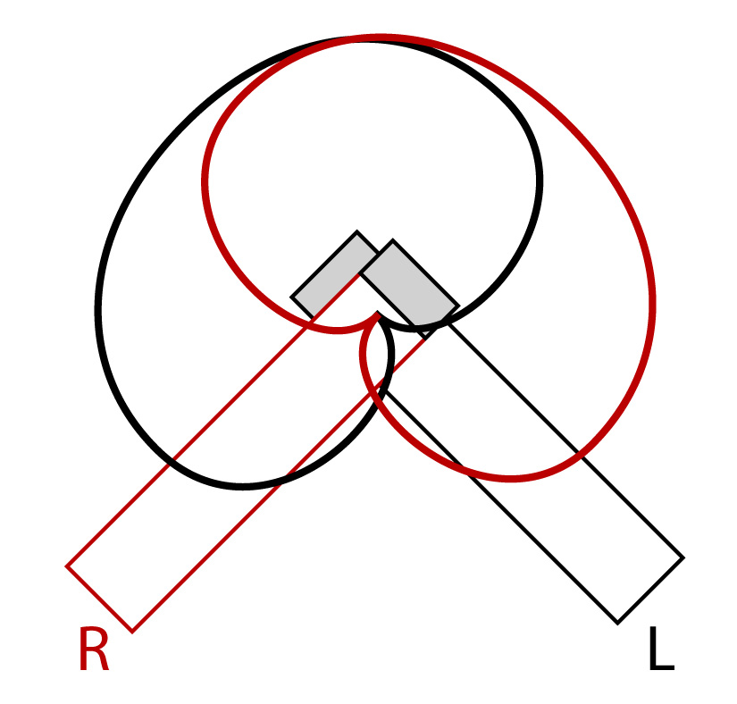
AO3 Phase CoherentCoincident XY (90°)
Two directional capsules placed as close as possible at 90°. Captures stereo width purely via level differences with zero phase cancellation when summed to mono.
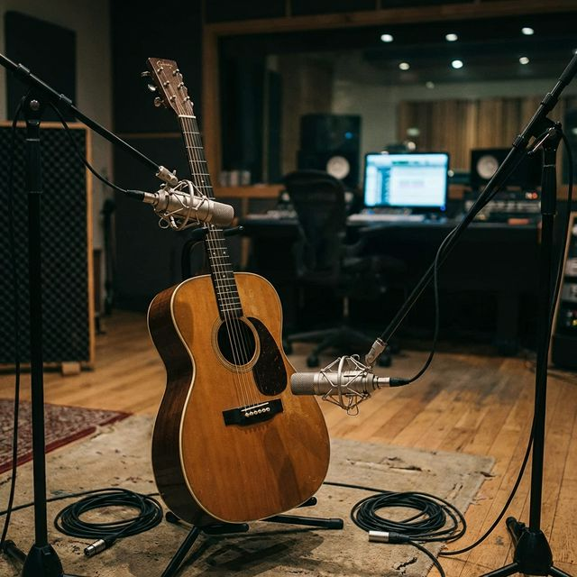
AO3 Wide Acoustic SpaceSpaced Pair (AB)
Two mics spaced 2–3 feet apart (following the 3:1 rule). Delivers a wide, lush stereo image using time-of-arrival differences, though potential mono phase risk exists.
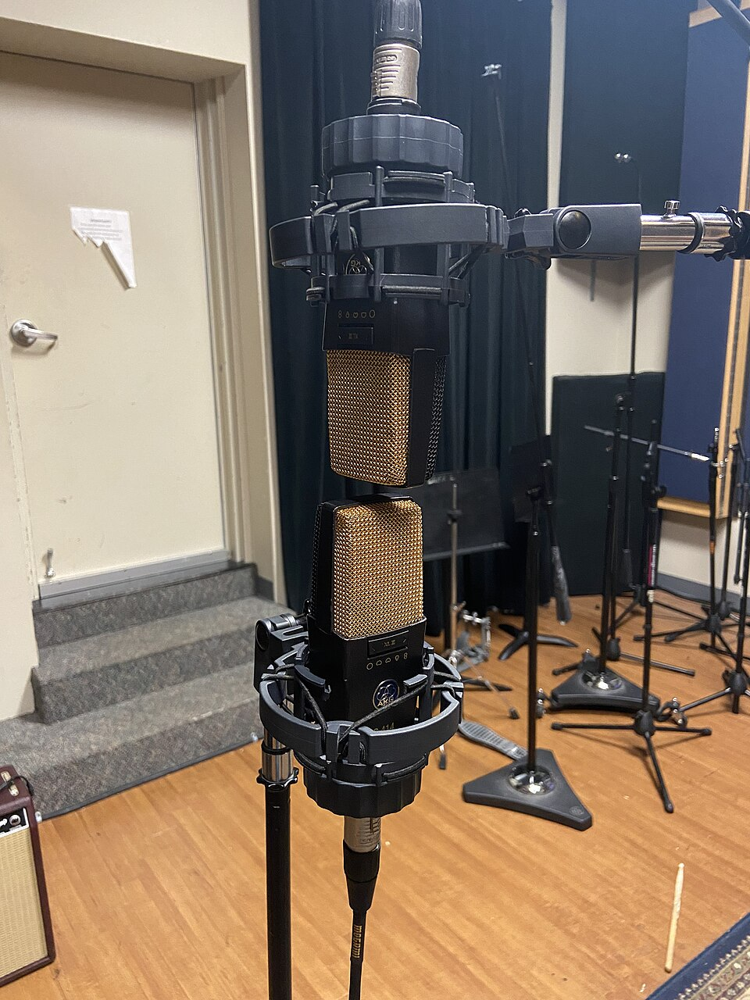
AO3 Room ReflectionsBlumlein & Mid-Side (MS)
Blumlein uses two crossed figure-8 mics at 90° for 360° spatial depth. Mid-Side pairs a cardioid Mid with a figure-8 Side for post-mix width control.
Newport 1965: Dylan Goes Electric
The collision of acoustic folk storytelling with electric rock and roll amplification reshaped popular music forever.
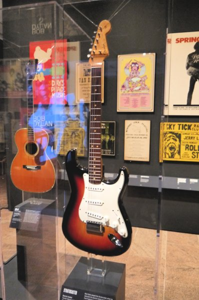
AO4 Cultural WatershedNewport Folk Festival 1965
On July 25, 1965, Bob Dylan walked onstage with an electric band and a Fender Stratocaster. Folk purists booed, but folk rock was born overnight.
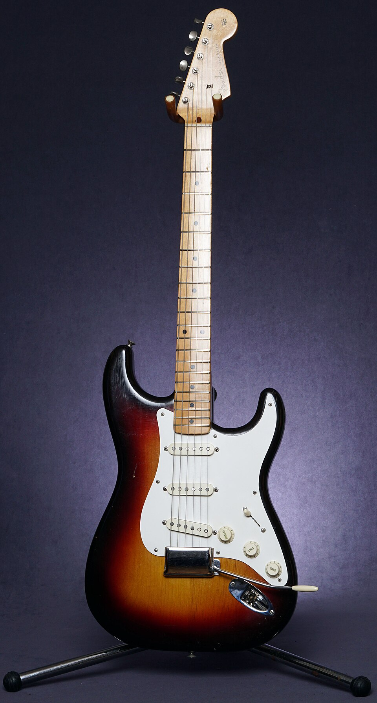
AO3 Rock AmplificationAmplified Electric Energy
Tube guitar amplifiers, solid-body electric guitars, and aggressive drum kits merged with poetic, socially conscious lyricism.
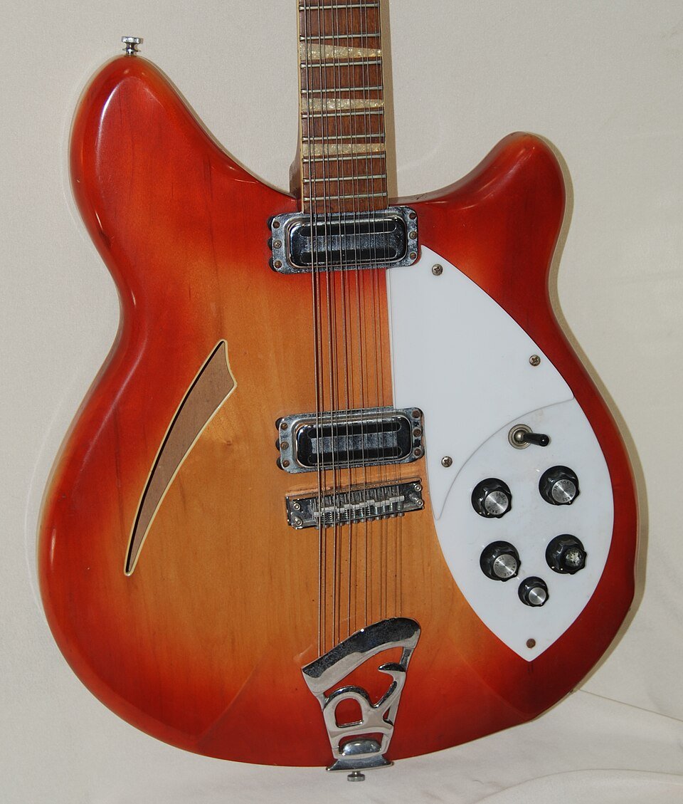
AO4 The Byrds & JangleThe Byrds & 12-String Jangle
Roger McGuinn's compressed Rickenbacker 360/12 electric guitar on Dylan's Mr. Tambourine Man defined the shimmering "jangle pop" sound.
Fairport Convention & The Sound Techniques Studio
In the UK, traditional British and Celtic folk ballads were married to rock rhythms in iconic independent London studios.
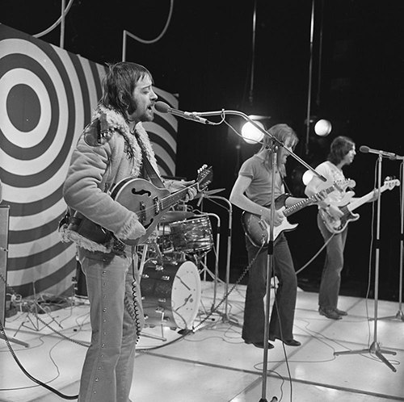
AO4 British MasterpieceFairport Convention & Sandy Denny
1969's Liege & Lief combined centuries-old traditional murder ballads with electric guitar, fiddle (Dave Swarbrick), and Sandy Denny's soaring voice.
Sandy Denny & Martin Carthy
Sandy Denny's haunting tone and Martin Carthy's inventive acoustic guitar tunings (CGCDGA) anchored the English folk revival movement.
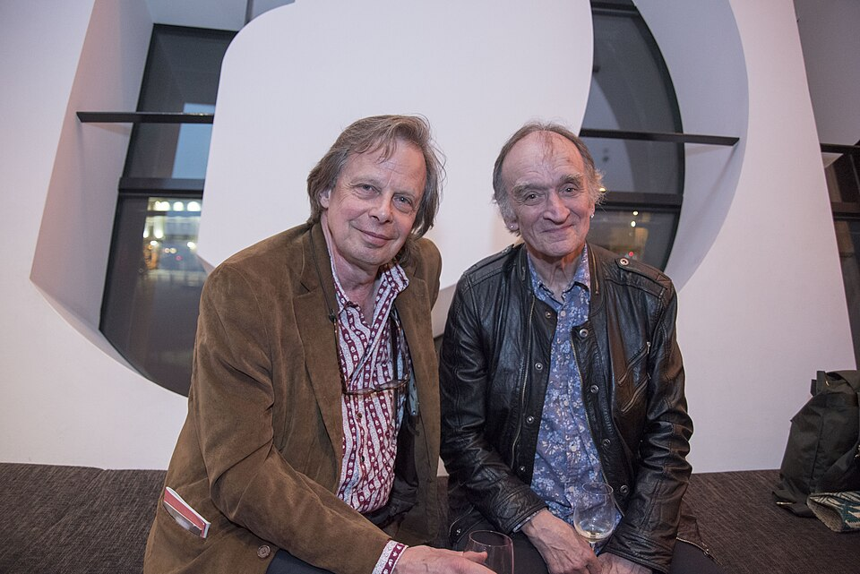
AO3 Studio PioneerSound Techniques (London)
Engineer John Wood and producer Joe Boyd tracked ensembles live with custom transistor desks, capturing natural room bleed as musical glue.
Singer-Songwriters: Joni Mitchell & Nick Drake
The 1970s saw acoustic intimacy elevated to fine art through experimental tunings, confessional lyrics, and exquisite production.
Joni Mitchell (Laurel Canyon)
Invented over 50 open and modal guitar tunings. Ladies of the Canyon and Blue showcase shimmering acoustic sparkle and dulcimer.
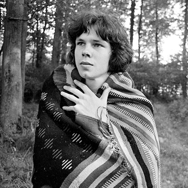
AO4 Intimate PerfectionNick Drake & Pink Moon (1972)
Recorded in two midnight sessions by John Wood at Sound Techniques with only Drake's acoustic guitar and voice captured on small diaphragm condensers.
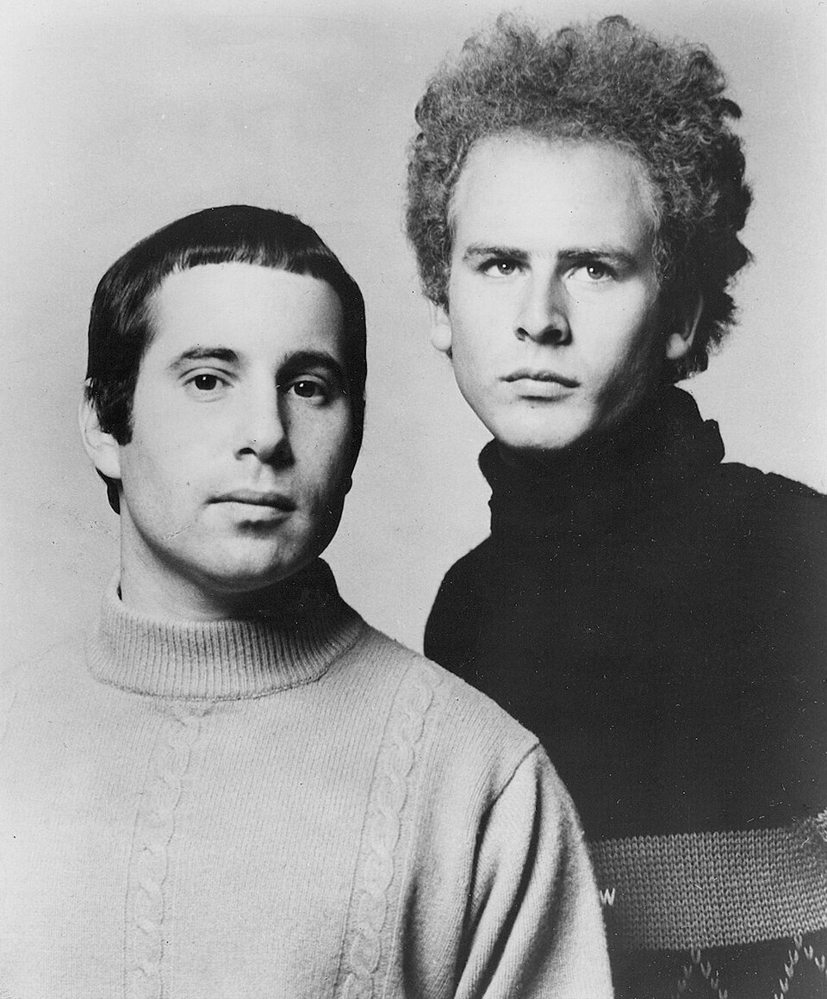
AO3 Harmonic PuritySimon & Garfunkel & CSN
Producer Roy Halee engineered Paul Simon and Art Garfunkel with lush acoustic tracking and pristine multi-part vocal blends on The Sound of Silence.
Dynamic Control, Plate Reverbs & Air EQ
Acoustic folk requires gentle, transparent studio processing that protects the emotional dynamics of the performance.
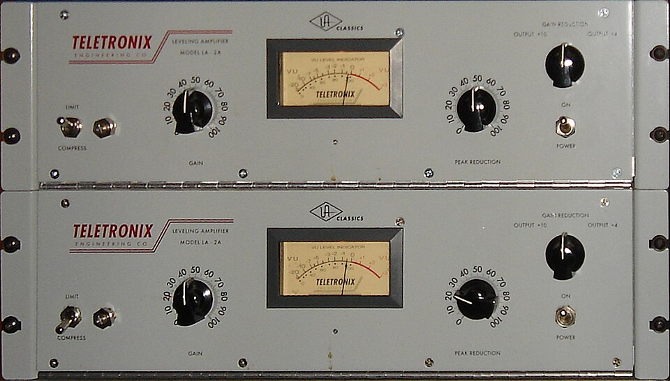
AO3 Transparent CompressionTeletronix LA-2A Optical Leveling
Electro-optical T4 cell delivers smooth, program-dependent multi-stage release. Tames acoustic peaks transparently without audible pumping or distortion.
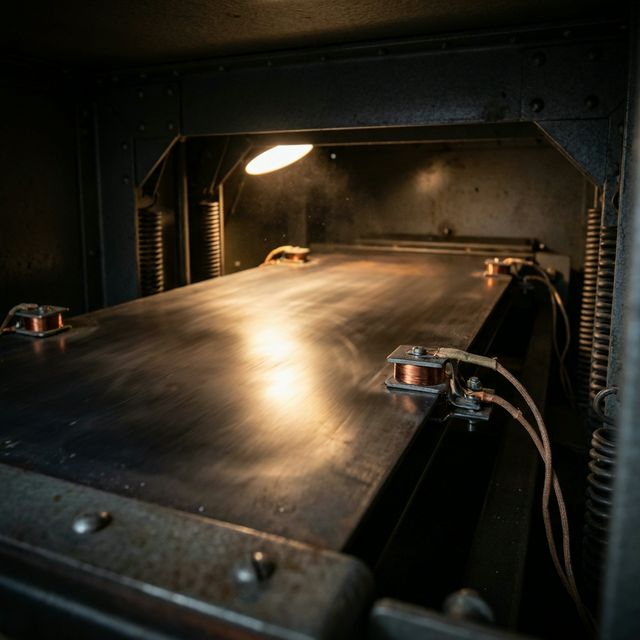
AO3 Spatial DepthEMT 140 Plate Reverb
A suspended steel plate driven by a transducer adds lush, smooth spatial decay to dry acoustic guitars and vocals, mimicking wooden concert halls.
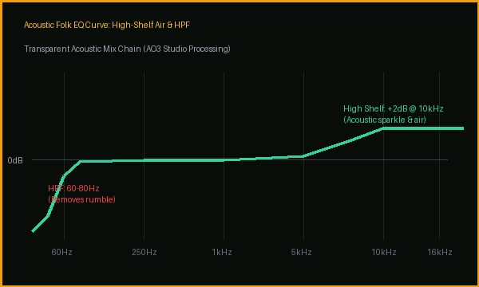
AO3 EQ & Soundstage PanningHigh-Shelf Air & Stereo Stage
Gentle 1–2 dB high-shelf boost at 10–12 kHz adds string shimmer; high-pass filtering at 60 Hz cleans mud. Discrete instrument panning creates an authentic stage.
21st Century Folk: Laura Marling & Indie Folk
Modern acoustic artists continue the tradition, pairing vintage analog mic chains with high-resolution digital DAW precision.
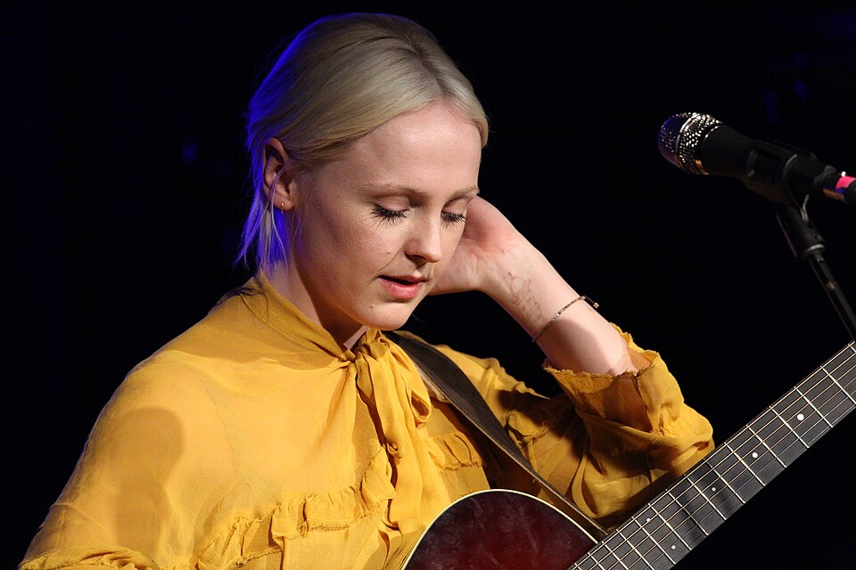
AO4 Modern StorytellerLaura Marling & British Folk
Acclaimed albums like Once I Was an Eagle feature direct live tracking of intricate open-tuned acoustic fingerpicking and poetic British balladry.
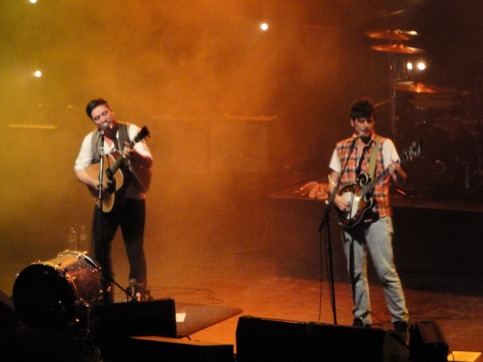
AO4 Arena Folk RevivalMumford & Sons & Americana
Brought acoustic banjos, kick drums, and upright bass to global stadium popularity, utilizing high-end ribbon and tube mics mixed for aggressive punch.
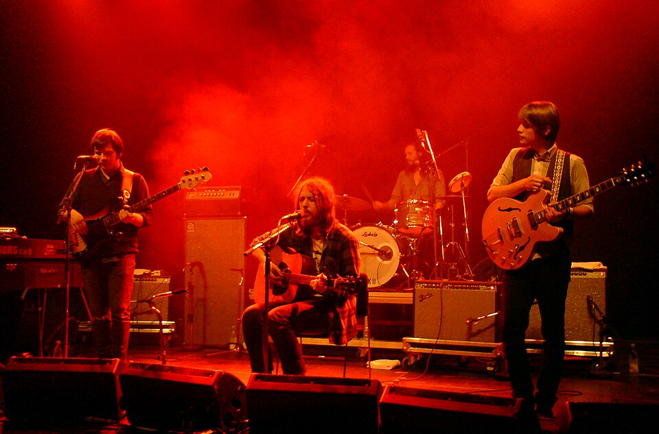
AO3 Chamber Folk HarmoniesFleet Foxes & Spatial Acoustics
Known for rich multi-part vocal harmonies recorded in resonant acoustic spaces (barns, chapels) with vintage ribbon microphones and long natural reverbs.